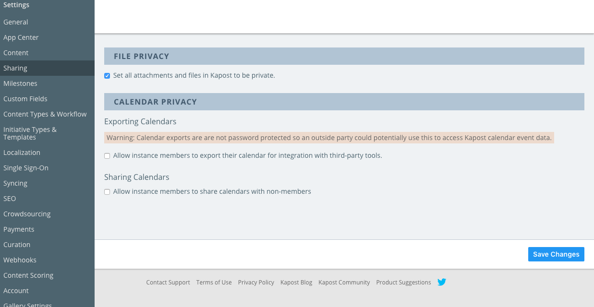
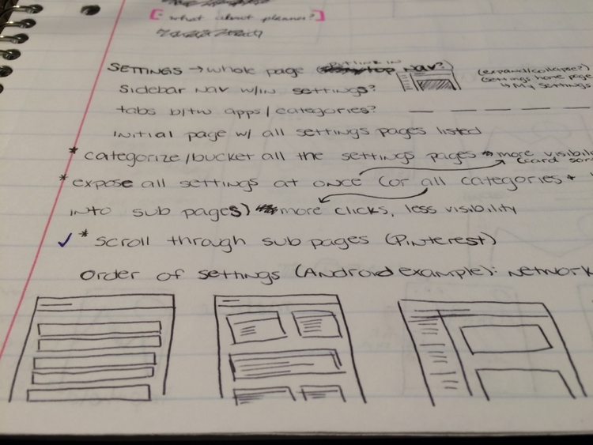
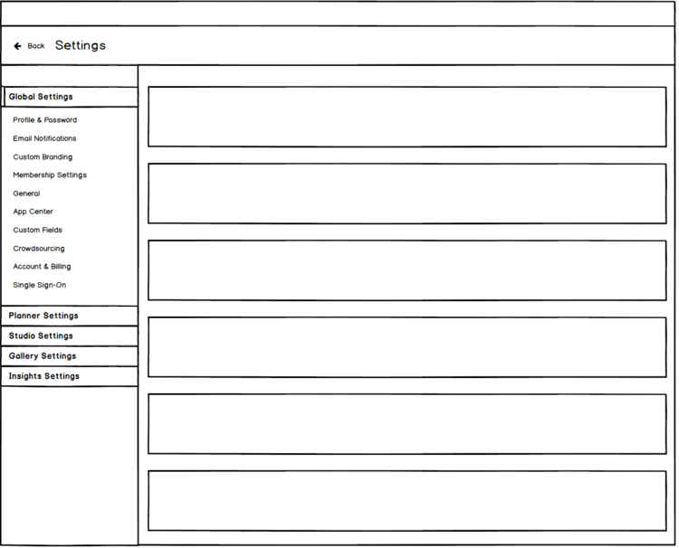

<div class="content">
	<div class="main">

		<div id="projects-main-gray">
			<h1 class="main-title">Kapost Global Settings Redesign</h1>
			<div class="extraPadding"></div>
		</div>

		<p>Today, Kapost's settings are very scattered throughout multiple pages and points of the platform.  There are 25-30 separate settings pages that can be turned on/off in the side nav and accessed from multiple touch points within the platform.</p>

		<p>Using one of our end-of-quarter hackathons, I spent a week auditing Kapost's settings, working with two of our Product Managers on bucketing them into better categories, creating wireframes and hi-fi's to present to the department at the end of the week.</p>

		<p><strong>Goal:</strong> Use Product &amp; Engineering's week-long hackathon to prove the importance of having a more centralized Settings page and user experience in the Kapost platform.</p>

		<hr>

		<p>The following screenshot will give you a general idea of how many settings pages we have in the left nav, as well as the look of them:</p>

		<figure>
			
		</figure>

		<p>The process towards new settings starts with lots of research and sketching...</p>

		<figure>
			
		</figure>

		<p>And then wireframes to talk through with the product managers...</p>

		<figure>
			
		</figure>

		<p>And finally, hi-fidelity mock-ups to present to the Product &amp; Engineering department.  Below is a preview of the breakdown and hi-fi design, all three screens are viewable on <a href="https://projects.invisionapp.com/share/677V7UFVE" target="_blank">InVision</a>.</p>

		<p>This was a great exercise as I was able to do a few things, such as:
			<ul>
				<li>Standardize a lot of the color usage and spacing/dimensions with our new Shared-UI app unification components and usage guidelines.</li>
				<li>Work with a Product Manager that I don't usually interact with as they are on a different team at Kapost.</li>
				<li>Present and prove the worth of a project that was recently bumped off of the roadmap.</li>
			</ul>
		</p>

	</div>
</div>